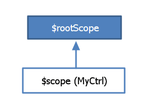

Throughout this workshop we'll be switching between presentation and writing code.
At the end of this workshop you should have written a variant of the famous [Todo Manager](http://todomvc.com/) and feel confindent enough to use Angular in a real project.
AngularJS is an MV* framework that is ideal for use when building client-side single-page apps.
It's also great for creating encapsulated components embedded in a web page.
If you're finding yourself building a SPA, AngularJS will be perfect for you. Gmail, Google Docs, Twitter, and Facebook all fit into the AngularJS sweet spot.
...if you're doing game development or manipulating the DOM *a lot*..
<!doctype html>
<html ng-app>
<head>
<meta charset="UTF-8">
<title>My Angular App</title>
</head>
<body>
<div>
<input type="text" ng-model="name" placeholder="Please enter your name">
<h1>Hello, {{ name }}!</h1>
</div>
<script src="//ajax.googleapis.com/ajax/libs/angularjs/1.2.15/angular.min.js"></script>
</body>
</html>
<!doctype html>
<html ng-app="myApp">
<head>
<meta charset="UTF-8">
<title>My Angular App</title>
</head>
<body>
<div>
<input type="text" ng-model="name" placeholder="Please enter your name">
<h1>Hello, {{ name }}!</h1>
</div>
<script src="//ajax.googleapis.com/ajax/libs/angularjs/1.2.15/angular.min.js"></script>
<script src="myapp.js"></script>
</body>
</html>
var app = angular.module('myApp', []);
Outside of the Angular realm
I'm an "embedded" Angular app!
<div ng-app="myApp">
<p>{{ myName }}</p>
</div>
var app = angular.module('myApp', []);
app.run(function ($rootScope) {
$rootScope.myName = 'Joe';
});
A scope is what ties the view (a DOM element) to the controller (your JS code).
Every Angular app is created with a $rootScope.
It sounds complicated, but really a scope is just a JavaScript object which you bind properties and methods to, to make them available in your HTML.
<button type="button" ng-click="sayHi()">Hello</button>
app.run(function ($rootScope) {
var notAvailableInView = 123;
$rootScope.sayHi = function () {
alert("Hi!");
};
});
To create a new $scope explicitly we create a new controller.
<div ng-controller="MyCtrl">
<p>{{ user.name }}</p>
</div>
app.controller('MyCtrl', function ($scope) {
$scope.user = {
name: 'Joe'
};
});
Scopes inherit prototypically. This means that everything available on the parent scope will be available on all of it's child scopes.

{{ user.name }}
app.controller('ParentCtrl', function ( $scope ) {
$scope.user = {
name: 'Joe'
};
});
app.controller('ChildCtrl', function ( $scope ) {
$scope.greetUser = function (user) {
alert('Hello, ' + user.name + '!');
};
});